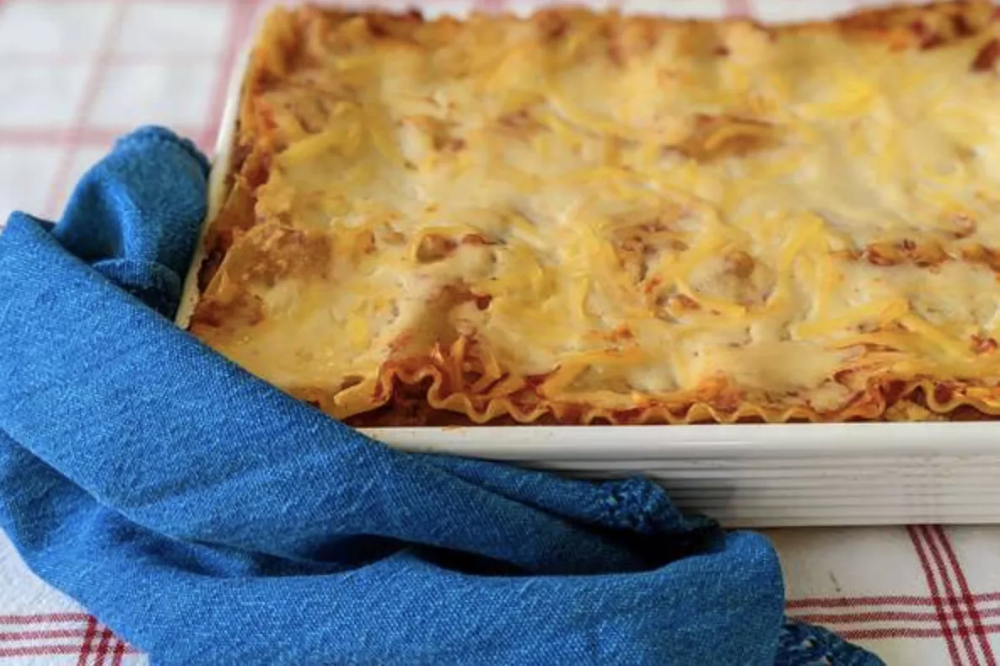

Lasagna

Description:
Allow the homemade lasagna to cool completely,
then transfer the leftovers to an airtight container.
Store in the refrigerator for up to four days.
Reheat in the oven or in the microwave.
If you plan to freeze lasagna, it's best to bake it in a foil pan.
Allow it to cool completely, then tightly wrap the entire dish in storage wrap.
Next, wrap it in at least one tight layer of aluminum foil.
Freeze for up to three months.
Thaw in the fridge overnight and reheat in the oven or microwave.
Ingredients:
- 1/2 pound ground pork
- 1/2 pound lean ground beef
- 1/2 cup minced onion
- 1 (28 ounce) can crushed tomatoes
- 1 (8 ounce) can tomato sauce
- 2 tablespoons chopped fresh parsley, divided
- 1 clove garlic, crushed
- 1 1/2 teaspoons dried basil
- 1 1/2 teaspoons salt
- 1/2 teaspoon dried oregano
- 1/8 teaspoon white sugar
- 1 (16 ounce) package lasagna noodles
- 1 pound small-curd cottage cheese
- 3/4 cup grated Parmesan cheese
- 3 large eggs
- 2 teaspoons salt
- 1/4 teaspoon ground black pepper
- 1 (16 ounce) package shredded mozzarella cheese
Steps:
-
Combine pork and ground beef in a large, deep skillet over medium-high
heat; cook and stir until browned and crumbly, 5 to 7 minutes. Add onion
and cook until translucent, about 5 minutes.
-
Stir in crushed tomatoes, tomato sauce, 1 tablespoon fresh parsley, garlic,
basil, salt, oregano, and sugar. Reduce heat to medium-low and simmer,
stirring occasionally, for 30 minutes.
-
While the sauce is simmering, bring a large pot of lightly salted water to a
boil. Cook lasagna noodles in the boiling water, stirring occasionally, until
tender yet firm to the bite, 8 to 10 minutes. Drain and set aside.
-
While the noodles are cooking, preheat the oven to 375 degrees F (190 degrees C).
-
Mix cottage cheese, Parmesan cheese, eggs, remaining 1 tablespoon fresh
parsley, salt, and pepper in a large bowl until combined.
-
Assemble lasagna: Spread a spoon or two of sauce over the bottom of a
9x13-inch baking dish just to to coat it. Place two layers of noodles over
the sauce to cover. Layer with 1/2 of the cheese mixture, 1/2 of the remaining
sauce, and 1/2 of the mozzarella cheese. Repeat layers once more using
the remaining noodles, cheese mixture, sauce, and mozzarella. Cover the
baking dish with aluminum foil.
-
Bake in the preheated oven for 30 to 40 minutes. Remove the foil and bake
until cheese is golden brown, 5 to 10 more minutes.
-
Remove from the oven and let stand for 10 minutes before cutting and serving.